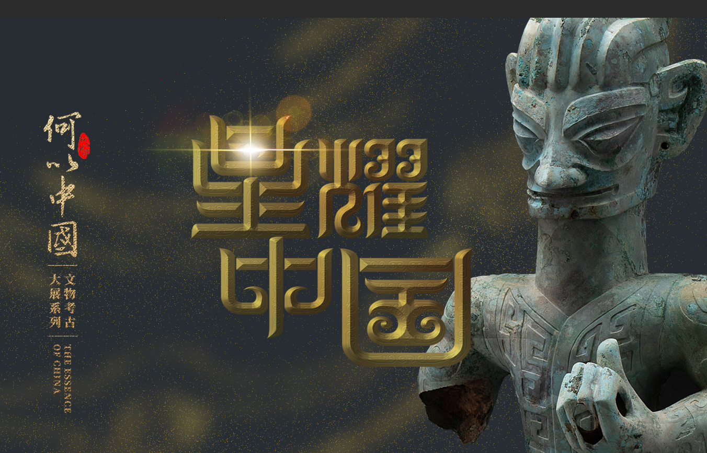

三星堆文化节
探索古蜀文明，感受神秘三星堆
特色景点

三星堆博物馆
三星堆博物馆是展示三星堆遗址出土文物的专题性博物馆，馆藏文物数千件，包括青铜大立人、青铜神树、黄金面具等国宝级文物，全面展示了古蜀文明的辉煌成就。
三星堆遗址
三星堆遗址是迄今在西南地区发现的范围最大、延续时间最长、文化内涵最丰富的古城、古国、古蜀文化遗址，被誉为"长江文明之源"。
三星堆文化公园
三星堆文化公园是以三星堆文化为主题的大型公园，园内有各种仿古建筑、雕塑和景观，再现了古蜀先民的生活场景，是休闲娱乐和了解古蜀文化的好去处。
交通指南
公交
从成都昭觉寺汽车站乘坐直达广汉的班车，约40分钟一班，车程1小时左右，到达广汉后转乘6路公交车直达三星堆博物馆。
高铁
从成都东站乘坐成绵乐城际铁路至广汉北站，车程约18分钟，出站后乘坐出租车约15分钟可达三星堆博物馆。
自驾
从成都出发，经成绵高速至广汉出口下，沿北京大道、西安路行驶约10公里即可到达三星堆博物馆，全程约1小时。